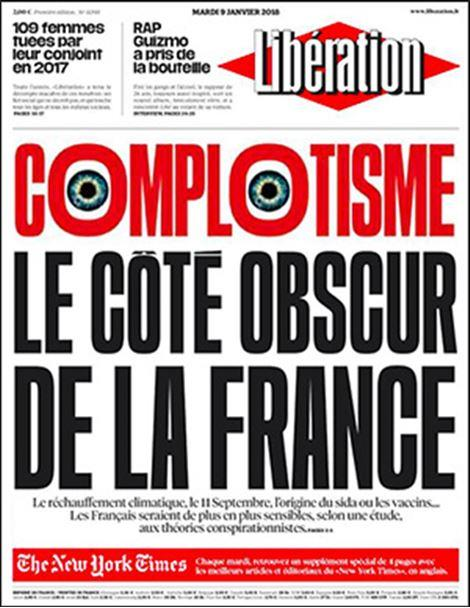
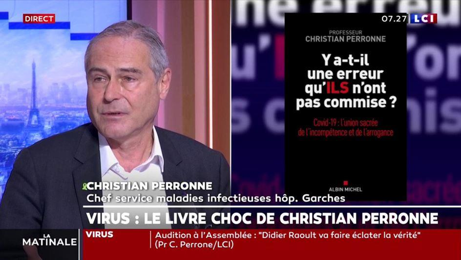

L’anti-complotisme est plus dangereux que le complotisme
par Jonathan STUREL
L’année 2020 a été particulièrement intense à tous les niveaux. Dans ce genre de climat, tout s’exacerbe, notamment les humeurs et les tensions. Dès qu’un événement occupe inhabituellement l’actualité, chaque citoyen est en quelque sorte pris en otage et contraint d’avoir un avis, une opinion, une préférence, c’est-à-dire qu’il doit en réalité se positionner politiquement sur tous les sujets qu’on lui impose d’intégrer à sa relation avec le monde extérieur. Impossible, par exemple, pour un citoyen français de rester impassible ou neutre devant le déferlement des gros titres qui annoncent qu’un policier blanc a blessé ou tué un homme noir ; au contraire il doit prendre position, montrer son émotion et manifester son dégoût sous peine d’être soupçonné au mieux d’être un sans-cœur, au pire un raciste. Il en va de même pour toutes sortes de sujets.
En somme, les médias diffusent à longueur de temps des informations qui sont en réalité des occasions de vérifier que chaque citoyen a les bons réflexes moraux et qu’il les manifeste correctement. C’est, ni plus ni moins, une sorte d’épée de Damoclès que nous avons en permanence au-dessus de nos têtes, qui scrute nos réactions et nous impose une pression sociale extrême.
Le flux informationnel est un examen sans fin pour s’assurer que nous avons toujours les idées propres.
Elle est toujours enrobée du pathos capable de convoquer chez le téléspectateur, l’auditeur ou le lecteur, un certain nombre d’émotions que les professionnels du sensationnalisme médiatique savent flatter en utilisant les ficelles habituelles (musique tragique dans les reportages, matraquage, formules ampoulées, etc.) Nous sommes exposés à ce traitement en permanence, tous les jours, avec bien entendu des périodes moins agitées et d’autres où tout s’emballe.
Avant 2020, jamais l’humanité n’avait été soumise comme nous l’avons tous été à une actualité à ce point commentée dans les médias. Dans nos pays, en Europe, pendant plusieurs mois entiers le coronavirus a occupé littéralement 100% du temps d’antenne. Même des événements internationaux comme la Coupe du monde de football ou les Jeux Olympiques n’ont jamais monopolisé nos écrans et nos journaux comme l’a fait cette épidémie dès le printemps. Dans ces conditions exceptionnelles, il était inévitable que plus rien ne soit traité de façon traditionnelle. Et très vite nous avons vu apparaître des oppositions de style et de fond, au centre desquels un clivage a rapidement pris l’ascendant : celui entre les « complotistes » et les « anti-complotistes ». J’indique immédiatement que je ne crois pas à la fiabilité de ce clivage, en tout cas pas tel qu’il est présenté par les médias et la classe politique.
Lorsque mon livre Coronavirus, autopsie d’un désastre politique a paru aux Éditions Altitude à l’été 2020, j’ai été très tôt accusé par ceux que la nomenclature habituelle appelle « les complotistes » d’avoir analysé la situation et la crise à partir de l’idée que nos dirigeants étaient médiocres, voire strictement incompétents, quand ces contestataires m’assuraient au contraire que tout avait été prévu, préparé et voulu, et donc que ce que je prenais pour de la médiocrité chez nos dirigeants était en réalité une démonstration d’efficacité et de professionnalisme mis au service d’un « Plan ». Si bien qu’à la parution de mon livre, ce sont plutôt « les complotistes » qui sont montés au créneau contre lui.
Pourtant, je leur pardonne. Il n’est certes pas agréable de voir des centaines d’heures de travail, de recherches et d’écriture balayées en trois secondes par un anonyme qui prétend vous contester simplement en affirmant que « les dirigeants ne sont pas incompétents, au contraire ils suivent un plan », tout en étant incapable évidemment de ne jamais rien prouver. Bien souvent, ces affirmations sont le fruit d’une vague intuition, rarement documentée, ou d’un rejet préalable de la classe politique. La tentation est sans doute grande chez certains d’aller au plus rapide, à l’explication la plus spectaculaire, en faisant l’économie d’une analyse véritablement complète et complexe de la situation dans son ensemble. Mais je redis que je leur pardonne ces inconsistances hasardeuses pour la raison simple qu’il y a un combat plus important à mener, plus urgent, plus vital, à savoir le combat contre les anti-complotistes devenus fous qui, en 2020, ont été plus intolérants, plus méprisants, plus censeurs et plus arrogants que jamais.
Qui plus est, il faut distinguer l’importance, en terme d’influence et de pouvoir immédiat et tangible, des « complotistes » d’un côté, qui généralement officient sur les réseaux sociaux ou dans les cercles d’amis, qui n’ont aucun pouvoir politique et n’occupent aucune fonction d’influence dans l’appareil médiatique ou politique, et les anti-complotistes de l’autre qui eux sont parfaitement intégrés aux infrastructures du pouvoir. Journalistes subventionnés, médias de masse, élus, fonctionnaires, modérateurs/censeurs sur les réseaux sociaux, les anti-complotistes sont aux commandes du pouvoir sous toutes ses formes matérialisées.
Par principe, lorsque deux forces s’opposent dont une dispose des leviers de commandes et l’autre non, c’est toujours en direction de la première que je vais concentrer mon attention. Y compris si effectivement les « complotistes » peuvent se tromper, divaguer, s’emballer, ce qui en soi ne serait un problème que si le camp d’en face ne faisait quant à lui jamais aucune erreur. C’est loin d’être le cas.
Pis, une erreur ou un mensonge d’un « complotiste » ne provoqueront pas de bouleversements d’ordre politique et n’auront aucune incidence sur le déroulement de l’agenda politique national ou international.
Tandis qu’une erreur ou un mensonge d’un journaliste subventionné du Monde, d’un préfet ou d’un conseiller du ministre impliquent de réelles et importantes modifications dans l’ordre quotidien de nos vies à tous.
Illustrons ce qui vient d’être dit par un exemple concret : au printemps, les gestionnaires de la crise, président, Premier ministre, gouvernement, fonctionnariat sanitaire, etc., avaient à propos du masque chirurgical un avis tranché : « le masque est inutile en population générale » et le porter peut même être… dangereux ! Quelques mois plus tard, le discours sur le masque a changé jusqu’à aboutir à une obligation de son port dans tous les espaces fermés, dans tous les commerces et même dans les rues de certaines villes. C’est-à-dire que sur un même sujet, le discours officiel a fait, en quelques mois, un virage à 180 degrés. Dès le printemps, un certain nombre d’observateurs avait noté que cette prétendue inutilité du masque correspondait, comme par hasard, à une pénurie causée par le sabotage, ces dernières années, d’un stock stratégique d’État qui une décennie plus tôt s’élevait à un milliard six cent millions d’unités. Les autorités ont d’abord nié la réalité de cette pénurie, avant de nier par conséquent que leur hostilité contre le masque puisse s’expliquer par le fait tragique qu’elles étaient incapables de nous en fournir. Si nous commentons cette séquence au travers du prisme de l’antagonisme complotistes/anti-complotistes, nous aboutissons à la conclusion obligatoire que ceux qui doutaient de la sincérité de la parole officielle sur cette question au printemps ne pouvaient le faire que par complotisme.
Ceci parce que cet antagonisme, dans sa version définitive et actuelle, est incapable d’admettre que l’on puisse contester aux autorités la sincérité de leurs déclarations pour des raisons de sincères inquiétudes rationnelles et réfléchies. Désormais, pour l’anti-complotiste type, critiquer les autorités est en soi une attitude louche et, pour ainsi, dire, un crime politique. En cela, l’anti-complotisme est devenue une arme au service des puissants, dont la mission est de discréditer en les faisant passer pour des illuminés ceux qui osent une critique du système. Au service de cette mission douteuse, les journalistes autorisés non seulement sont invités à joindre leurs efforts mais sont même payés pour cela. Tous les grands titres de la presse habituelle disposent maintenant d’un service de « fact checking », lesquels d’ailleurs ont signé avec les réseaux sociaux des partenariats qui leur permettent de venir directement sur les fils d’actualité des utilisateurs pour leur dire si ce qu’ils lisent ou qu’ils s’apprêtent à lire a été validé ou non, contesté ou non par des journalistes professionnels, c’est-à-dire par des anti-complotistes rémunérés.
Il va de soi que cette besogne s’effectue toujours dans un certain sens, que j’appelle l’officialité. D’une manière générale j’appelle les anti-complotistes des agents de l’officialité, c’est-à-dire des gens qui chaque fois qu’ils devront choisir entre deux discours auront toujours une préférence pour celui qui émane des cercles officiels, des ministères et des institutions, ou à défaut qui s’en rapproche le plus. Pour eux, un communiqué de presse du Ministère de la Santé aura toujours plus de valeur, devra toujours être crû par rapport à une publication d’un professeur Raoult par exemple, ou de quiconque n’émarge pas directement au ministère ou n’est pas mandaté par lui.
D’une certaine manière, l’anti-complotisme militant et rémunéré est devenu un immense service après-vente des décisions gouvernementales et une authentique déneigeuse politique qui leur ouvre la voie. Les journalistes, qui jadis faisaient profession de douter des communiqués de presse officiels, sont maintenant des agents totalement assumés au service de la promotion d’une vision en particulier du monde, qu’ils ratifient de concert avec les puissants et l’État. Par exemple nous n’avons vu aucun grand journal faire une véritable enquête sur les raisons profondes de l’hostilité du pouvoir à l’égard de l’hydroxychloroquine, quand tout pourtant dans son comportement avait de quoi nous interroger.
Quels sont les réseaux autour du ministre, quels hommes forment le bataillon de ses conseillers, quels sont leurs liens avec des groupes privés, qui est derrière l’étude frauduleuse parue dans The Lancet, pourquoi Véran s’en est-il emparé aussi vite et sans discernement, toutes ces questions refusent d’être abordées par la presse autorisée, et j’évalue que ce refus s’explique par leur souhait de ne pas « faire le jeu des complotistes ». Autrement dit la profession journalistique a renoncé à ce qui faisait une partie de son prestige, et en abdiquant comme elle le fait devant un terrain qu’elle a elle-même contribué à couvrir de mines explosives, elle est devenue à la fois l’aliment et le cuisinier d’une recette infernale.
L’anti-complotisme est une machine aveugle qui ne fait plus aucune différence
Outre sa dimension évidemment politique et idéologique, l’anti-complotisme se caractérise également par son insatiable boulimie aveugle. Pendant longtemps, nous avons considéré les complotistes et les conspirationnistes comme autant de farfelus inventifs qui faisaient entre la réalité et la science-fiction des allers-retours très librement inspirés. Dans les années 90 par exemple, le complotiste type avait entre autres le visage de Jimmy Guieu, du nom de ce prolifique auteur français de romans de science-fiction passionné par la question extra-terrestre. Plusieurs fois il est apparu sur les plateaux de télévision pour y affirmer que les êtres cosmiques étaient sur la terre et que les grands de ce monde conspiraient avec eux. Généralement, ces interventions étaient organisées par les chaînes de télévision à la manière d’un « dîner de cons », et l’auditoire qui assistait à ces démonstrations étonnantes ne se privait d’ailleurs pas d’en rire à la face de l’invité. Il n’était certes pas très déontologique ni très respectueux de se comporter ainsi, mais au moins les complotistes de l’époque, au lieu d’être criminalisés comme aujourd’hui, passaient au pire pour des biscornus que personne finalement ne prenait au sérieux. Entre temps, l’anti-complotisme a revu ses critères et les a élargis pour leur faire englober désormais les adversaires politiques, les citoyens sceptiques et les contestataires.
Ainsi nous voyons se côtoyer, à l’intérieur d’un prétendu « camp complotiste », des gens qui n’ont rien à voir entre eux et qui se retrouvent à partager la même étiquette infâmante. Par exemple, un citoyen qui, pour une raison ou pour une autre, a l’intuition que le virus n’est pas naturel mais qu’il est la conséquence d’un accident de laboratoire, se retrouve maintenant affublé du même qualificatif que tel autre qui déclare que les extra-terrestres sont parmi nous et qu’ils président d’ores et déjà aux destinées de notre monde. Les deux n’ont pourtant rien en commun, et s’ils partagent quelque chose c’est seulement d’avoir une idée qui n’est pas majoritaire et qu’ils ne peuvent pas démontrer. Mais jusqu’à preuve du contraire, et jusqu’à récemment d’ailleurs, un homme qui ne peut pas démontrer factuellement et matériellement ce sur quoi il fonde une idée ou une intuition n’est pas un criminel. C’est pourtant comme cela qu’il est traité de nos jours, et tout l’appareil médiatique et politique se met en branle contre lui et cherche à le faire passer pour un fou, un illuminé, c’est-à-dire un dangereux personnage qu’il faut isoler du reste du groupe.
Il faut pourtant redire que l’intuition ou la conviction que ce virus est sorti d’un laboratoire, aussi fausse que puisse être cette affirmation, ne constitue ni un crime en soi ni un levier capable de troubler l’ordre public. La folie anti-complotiste, dont il faut rappeler le caractère extrêmement intolérant et les ambitions purificatrices, prétend attirer l’attention de la société contre ces citoyens qui lui sont alors livrés sous la forme de criminels qu’il faudrait bannir de l’espace public et pourquoi pas condamner en justice. Nous citons l’exemple de l’origine du virus, mais la démonstration s’applique à bien d’autres sujets en général, et en particulier dans le cadre de cette crise sanitaire.
a. Les « complotistes » ne constituent pas une force politique capable d’influencer la décision publique, de voter des lois ou d’intégrer les cercles du pouvoir. Et ils n’en seront pas davantage capables demain, ni dans dix ou vingt ans, et en réalité jamais. Peu importe ce que l’on pense de leurs affirmations, que l’on soit ou non d’accord avec leurs conclusions, le fait est qu’ils ne représentent en réalité aucun danger pour l’ordre politique établi, et toute tentative de faire croire l’inverse doit être considérée pour ce qu’elle est, à savoir une opération politique de diversion.
b. La catégorie « les complotistes » est impropre à la consommation intellectuelle. Par glissements progressifs, nous avons fini par mettre sous cette étiquette des gens qui n’ont rien à y faire, de simples sceptiques, parfois des gens simplement mal renseignés, des cartésiens, des contestataires par principe, qui tous doivent maintenant supporter une sorte de cohabitation improbable avec les chasseurs de Reptiliens Illuminatis et autres théoriciens de la terre plate. Le seul fait qu’autant de personnes si différentes entre elles se retrouvent assignés à résidence dans la même prison rhétorique doit nous interroger sur la fiabilité de cette catégorisation et sur la pertinence de son existence en tant qu’outil politique de classification. Quant au fait que ce sont souvent des gens motivés politiquement qui contribuent à fournir son contingent de nouveaux résidents à cette catégorisation (je parle des journalistes qui sont tous, sans exception, qu’ils acceptent de l’admettre ou non, qu’ils en soient seulement conscients ou non, des agents politiques à un degré ou à un autre), cela aussi doit nous alerter et nous mettre en garde.
La liberté a été dangereusement attaquée en 2020
Les mesures de confinement, de couvre-feux, de restrictions des déplacements utilisées dans des proportions inédites, ont évidemment remis en cause un principe que nous pensions acquis pour toujours, celui de la liberté de se déplacer et de disposer de l’espace public. Mais un autre genre de liberté a lui aussi été remis en cause au cours de cette année, lui aussi dans des proportions que nous n’aurions jamais imaginées l’année dernière — et pourtant Dieu sait que nous connaissons le goût de nos maîtres pour le bâillonnement : la liberté de penser, par conséquent celle aussi de s’exprimer. En janvier et février, dans la mesure où nous n’étions pas encore entrés à proprement parler dans la séquence de crise, c’est encore le fonctionnement ordinaire qui organisait nos vies. À partir du mois de mars, plus spécialement à partir du 16 mars 2020, date de la deuxième allocution présidentielle qui devait annoncer le confinement généralisé, les commentateurs, les journalistes, les politiques de la majorité ou de l’opposition n’ont plus parlé que comme un seul homme. Rarement une telle unanimité avait été atteinte, et ce très évidemment à cause du caractère apparemment inédit de la situation que nous rencontrions, et parce que le président Macron avait eu l’idée judicieuse d’employer l’expression « union sacrée » dans son allocution.
Dès la fin de son intervention, la presse en ligne a commencé de publier ses articles en reprenant, dans les titres, l’expression en question.
Tout était en place, toutes les ficelles psychologiques étaient tendues pour qu’effectivement personne ne se risque à être la brebis égarée qui fissurerait cette union sacrée. Si bien que même les décisions les plus loufoques, même les preuves manifestes de l’impréparation des autorités ont pu n’être ni critiquées ni même commentées par aucun journaliste, par aucun membre de l’opposition.
Cette unanimité en rangs serrées derrière le pouvoir a été une parenthèse, en quelque sorte un moment en suspension dans la vie politique française.
C’est après le confinement, lorsque le temps ordinaire du jeu politique a pu reprendre, que des langues ont commencé de se délier. Jusqu’ici, c’est volontairement que les commentateurs s’étaient soumis à la restriction de leur propre parole. À partir de l’après-confinement, la parole publique sera surveillée, fliquée, encadrée et dénoncée comme jamais sans doute elle ne l’avait été. Et les agents qui ont consenti à ces efforts ont été, en première ligne, les anti-complotistes rémunérés, autrement dit les journalistes, copieusement assistés pour l’exécution de cette tâche par l’armada des modérateurs de réseaux sociaux et par le contingent des idiots utiles, simples citoyens enrégimentés devenus fonctionnaires de la délation. Une véritable chasse aux sorcières s’est installée qui a abouti, à force de surenchère, à créer un climat suffisamment électrique et hostile pour qu’un homme comme le professeur Christian Perronne soit convoquée par sa hiérarchie et démis de ses fonctions de chef de service à l’hôpital de Garches. J’affirme en effet que jamais ce professeur n’aurait connu les mêmes déboires s’il n’y avait pas eu pendant des mois, dans les médias, cet acharnement des journalistes à traquer la moindre parole dissidente.
Moins spectaculaire mais toujours aussi étouffante, l’activité des journalistes anti-complotistes a rendu extrêmement difficile la libre expression d’opinions divergentes, lesquelles s’interdisent d’exister par peur des conséquences. Au catalogue de ces conséquences que chacun veut éviter, il y a la campagne médiatique persistante et hostile contre laquelle peu de personnes sont préparées.
À cet égard, j’affirme que la pression qui est exercée par l’anti-complotisme militant sur la parole publique agit exactement comme une arme d’intimidation massive. Par exemple à l’annonce de l’arrivée du vaccin, et bien qu’un certain nombre d’éléments justifient et rationnalisent une certaine prudence, nous voyons finalement très peu de voix protester véritablement, directement, énergiquement contre les velléités gouvernementales, et surtout contre l’impatience gouvernementale en matière de vaccination de masse. Dans la mesure où tenir une position critique sur ce sujet vous expose immédiatement aux foudres des journalistes aux ordres, eux-mêmes perclus de trouille d’être pris en flagrant délit d’indiscipline, il est certain que si le troupeau des taiseux est aussi vaste c’est moins du fait d’une confiance sincère et résolue dans le vaccin et dans la stratégie vaccinale que pour s’empêcher d’être pris dans une tourmente médiatique qui peut aller jusqu’à vous faire perdre votre travail.
Il y a donc une urgence à mettre un coup d’arrêt à la persécution anti-complotiste. Cette besogne à laquelle se livrent les médias, qui satisfait évidemment le pouvoir, est en train d’installer le cadre d’une dangereuse uniformisation de la parole publique, dont une des premières conséquences tragiques est, et sera de plus en plus, de limiter d’un même coup la liberté d’expression d’une part et la possibilité même de la circulation de certaines vérités d’autre part. Car lorsqu’il ne sera plus possible d’avoir un avis qui diffère de celui de tel ministre ou de telle institution, le pouvoir aura toute latitude pour faire exactement ce qu’il veut sans jamais en rendre compte puisque les contestataires et les sceptiques auront été supprimés de l’agora par les persécuteurs anti-complotistes et les chasseurs de « fake news ».
L’anti-complotisme sous sa forme actuelle a donc été dévoyé. En se politisant et en devenant une arme à disposition du pouvoir et de l’officialité, il a cessé d’être ce qu’il aurait été acceptable qu’il soit, à savoir une branche du journalisme qui se charge de corriger si nécessaire des affirmations discutables, sans mépris et sans intention de punir les mal-pensants. Or, ce que fait actuellement l’anti-complotisme est exactement livrer ces récalcitrants à la vindicte, tout en attirant sur eux l’attention de leurs employeurs, voire des autorités judiciaires. En plus de la criminalisation des « complotistes » (je redis que ce terme est inopérant, notamment parce qu’il sert de fourre-tout et que des gens s’en servent pour disqualifier leurs opposants politiques), la nouvelle lubie des médias consiste à les psychiatriser en prime. Un activiste comme Tristan Mendès France peut ainsi publier sur le site de France Inter, le 18 décembre 2020, un article surréaliste dont le titre est à lui seul tout un programme : « Que faire quand un proche bascule dans le complotisme ? » (sic).
Parmi les « conseils » hallucinants qui sont proposés aux lecteurs, celui-ci : « Et ça n’est pas toujours facile [d’avoir un proche qui bascule dans le complotisme], on a parfois en face de soi un individu désagréable, braqué ou orgueilleux. Reste qu’il faut essayer de trouver un terrain d’entente, en insistant sur les choses qu’on partage. Et pourquoi pas, lui dire qu’on l’aime, qu’on s’inquiète. Rappeler les bons souvenirs qu’on avait avant qu’il ne bascule ». Tout l’article dégouline de ce pathos méprisant et paternaliste. On y parle de « basculer dans le complotisme » comme nous parlerions de basculer dans le terrorisme, dans la drogue, dans le crime. Le « complotiste » y est présenté sous les traits d’un dangereux dément qui aurait rejoint une secte eschatologique ou criminelle.
Du calme ! Dans 99 cas sur 100, le fameux complotiste est simplement un citoyen qui estime à tort ou à raison qu’il dispose de suffisamment d’éléments pour justifier les doutes qu’il ressent et qu’il exprime devant les décisions de nos élites — et compte tenu du bilan désastreux de ces élites depuis cinquante ans et en particulier au cours de cette crise sanitaire qui aura été gérée catastrophiquement d’un bout à l’autre, le moins que l’on puisse dire est qu’une telle critique est très largement justifiée et fondée.
La résistance à l’anti-complotisme militant est un combat pour la liberté.

Partager cette page